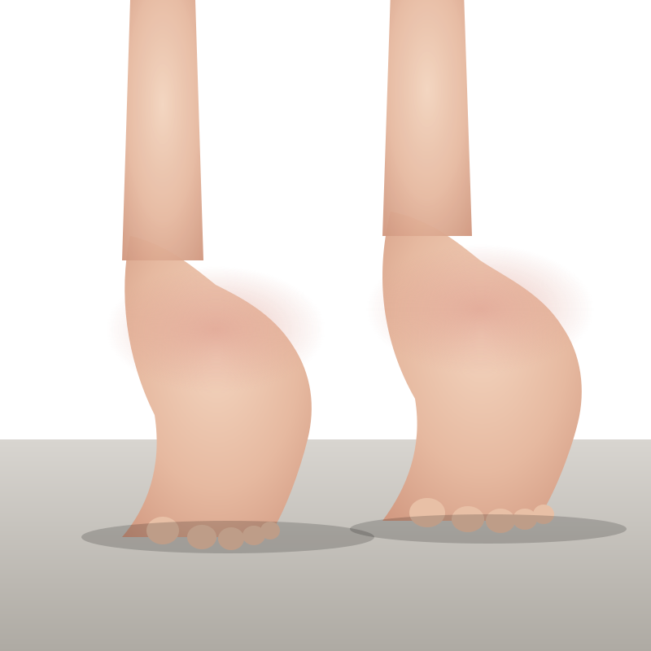

Leave blank when using node demo-ccm/proxy.js. Stored only in this browser's localStorage.
Default: http://localhost:8787/v1 (the local proxy).
The Quo line the patient calls. Pick from the dropdown or paste a PN id.
Displayed as "(202) 210-9652" in the patient sidebar. Default: +12022109652.
Loads claire-mock-summary-ko.json.